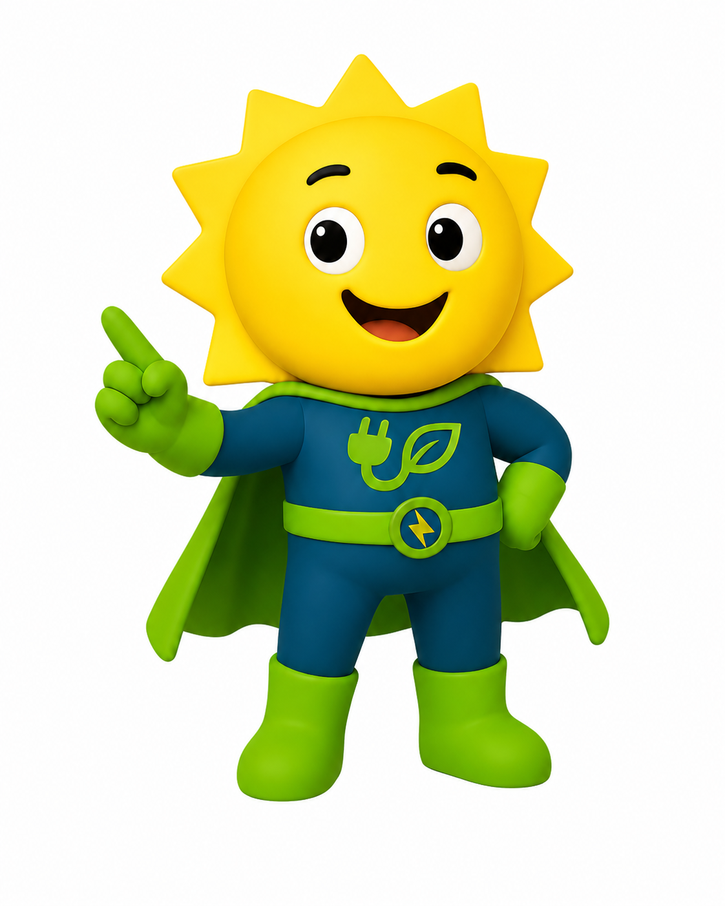

🍌
Orgânicos
Restos de alimentos, cascas, borra de café, sachês de chá, flores, plantas e resíduos de jardim.
Tire dúvidas sobre o descarte correto de resíduos no CSI. Pergunte onde descartar copos, latinhas, papel toalha, pilhas, embalagens, orgânicos, recicláveis e rejeitos.

Antes de descartar, confira se o material está limpo, seco e se precisa de uma destinação específica.
Restos de alimentos, cascas, borra de café, sachês de chá, flores, plantas e resíduos de jardim.
Papéis, plásticos, metais, vidros, papelão e embalagens limpas e secas antes do descarte.
Papel toalha usado, copo de café, papéis sujos, embalagens metalizadas, isopor sujo e cupom fiscal.
Pilhas, baterias, lâmpadas, cabos, carregadores, mouses, teclados e fones devem ir para ponto específico.
Esvazie o líquido e descarte no ponto específico das latinhas da Dona Ione.
O EM CONTA foi criado para ajudar de forma rápida, principalmente perto dos pontos de descarte. Na dúvida, pergunte antes de jogar fora.
Exemplo: “copo de café”, “embalagem de salgadinho”, “garrafa PET” ou “papel toalha usado”.
O bot informa o destino correto, o preparo antes do descarte e o motivo da separação.
Evite misturar recicláveis com rejeitos, restos de comida ou líquidos. Isso melhora a reciclagem e reduz contaminações.